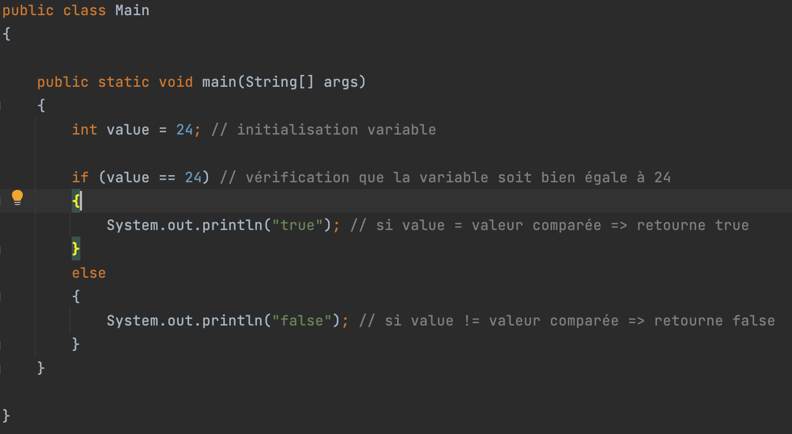
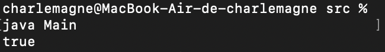
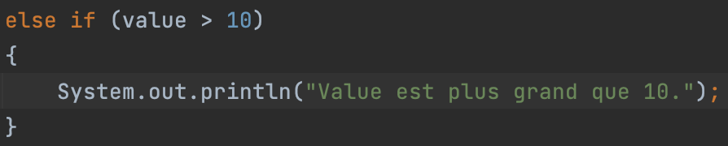
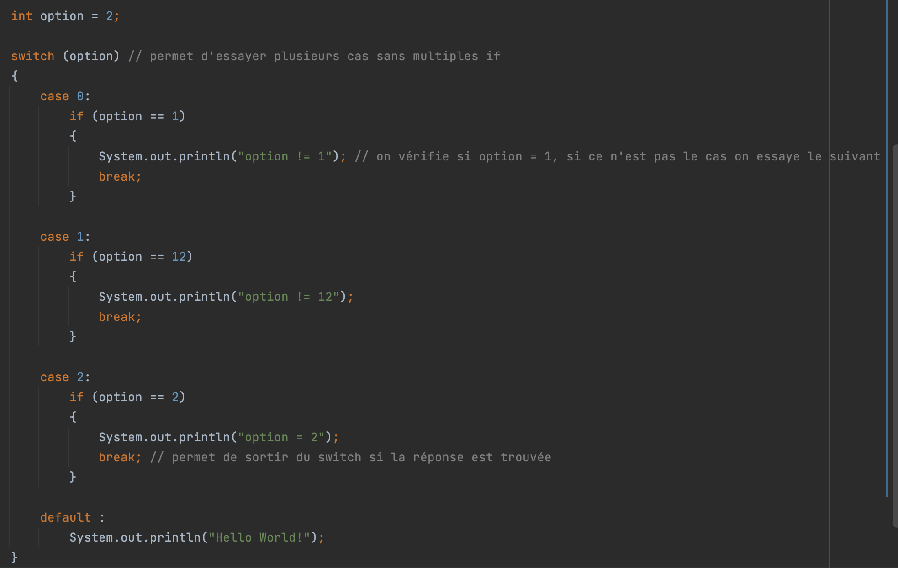
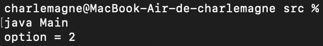

Dans le programme ci-dessous nous allons vérifier que la variable value soit bien égale à 24. Si la variable est bien égale à 24, on affiche true dans le terminal, si ce n’est pas le cas on affiche false.
Voici le résultat obtenu dans le terminal :
La condition Else sert uniquement à exécuter une action quand la condition du if n’est pas remplie, tandis que le else if sert à vérifier une autre condition.
Le Switch Case est une autre façon de tester plusieurs options sans avoir à utiliser des if imbriqués. Le programme liera toutes les conditions les unes après les autres, même si une condition est vérifiée. Pour éviter de perdre du temps à vérifier toutes les conditions, il est possible d’utiliser break pour quitter le switch case dès lors qu’une condition est respectée.
 